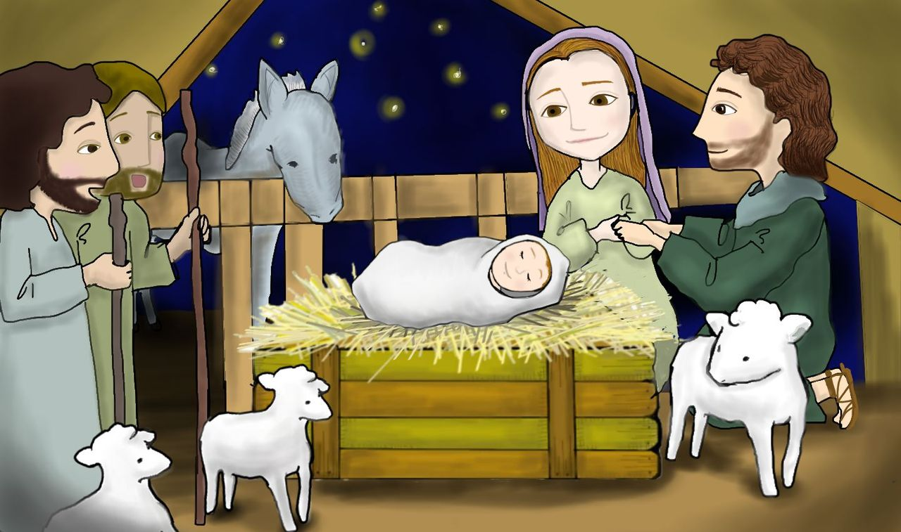
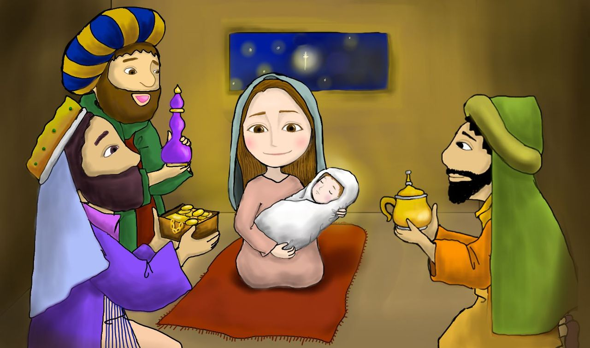
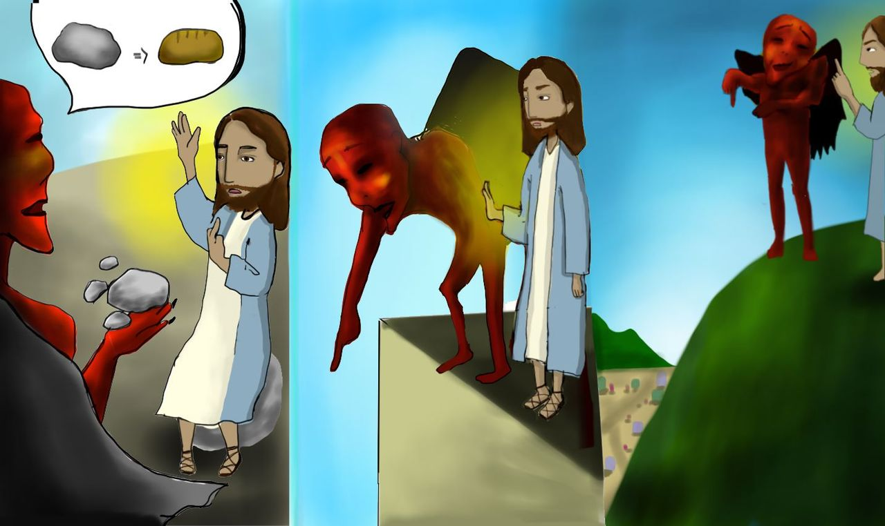
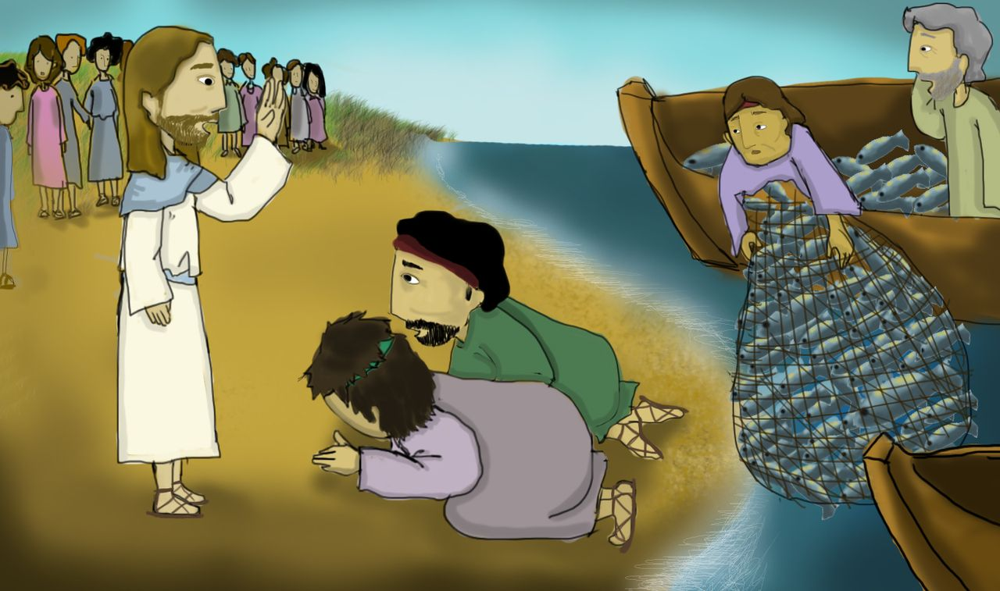
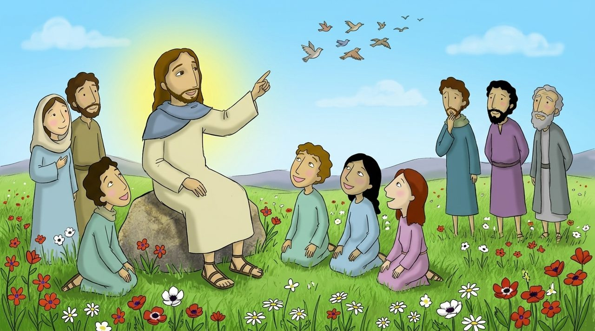
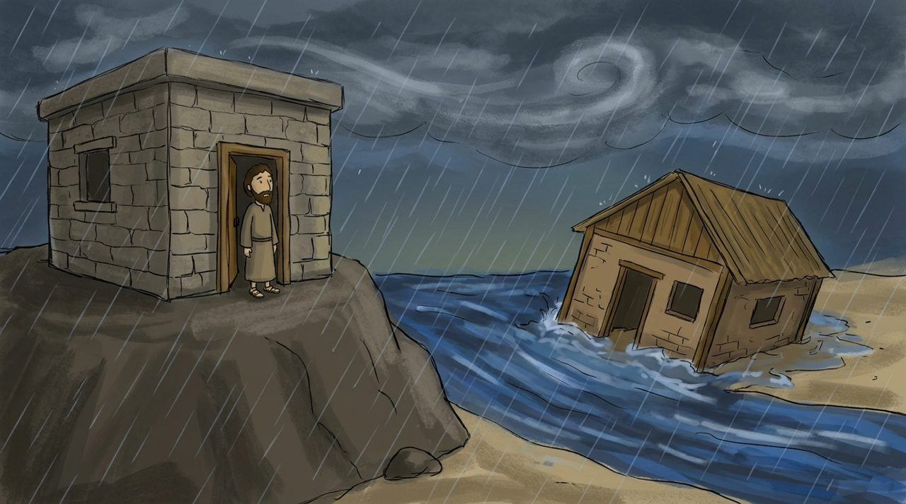
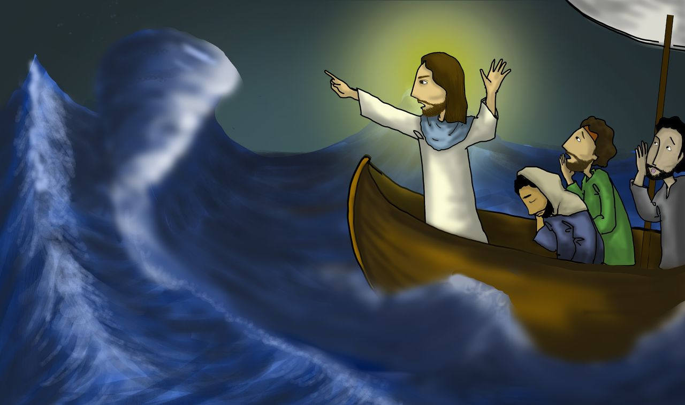
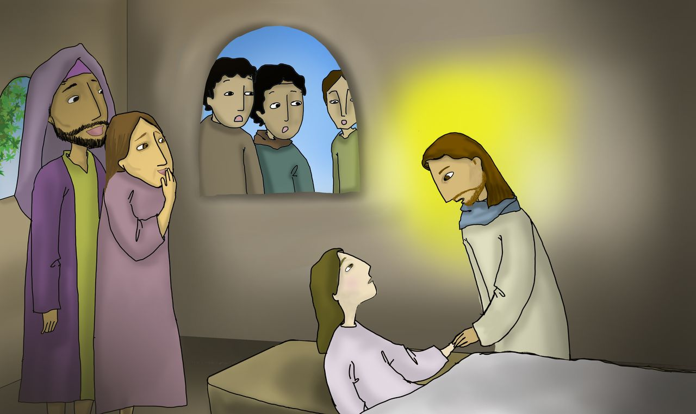
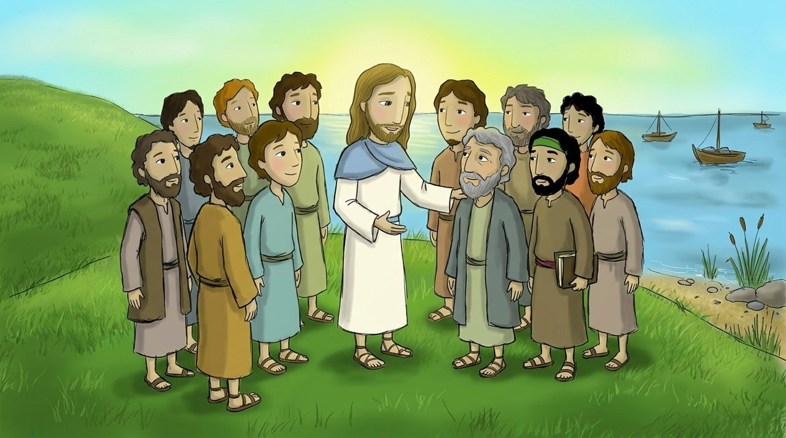

Müqəddəs Kitab dərsləri
Uşaqlar və yeniyetmələr üçün · 어린이·청소년 성경 공부
Mattanın yazdığı Müjdə
1-ci dərs · 제1과 · Matta 1:1–25
İmmanuel — Allah bizimlədir!
임마누엘, 하나님이 우리와 함께

2-ci dərs · 제2과 · Matta 2:1–12
Ulduzun ardınca gələn müdriklər
별을 따라온 동방박사

3-cü dərs · 제3과 · Matta 2:13–23
Allahın qoruduğu körpə İsa
하나님이 지켜 주신 아기 예수님

4-cü dərs · 제4과 · Matta 3:1–17
Göydən gələn səs
하늘에서 들린 목소리

5-ci dərs · 제5과 · Matta 4:1–11
Kəlamla qalib gələn İsa
말씀으로 이기신 예수님

6-cı dərs · 제6과 · Matta 4:12–25
Ardımca gəlin
나를 따라오너라

7-ci dərs · 제7과 · Matta 5:1–16
Dünyanın duzu və nuru
세상의 소금과 빛

8-ci dərs · 제8과 · Matta 5:17–48
Düşmənlərinizi sevin
원수를 사랑하라

9-cu dərs · 제9과 · Matta 6:1–18
Göylərdə olan Atamız
하늘에 계신 우리 아버지

10-cu dərs · 제10과 · Matta 6:19–34
Narahat olmayın
걱정하지 마세요

11-ci dərs · 제11과 · Matta 7:1–29
Qaya üzərində tikilən ev
반석 위에 지은 집

12-ci dərs · 제12과 · Matta 8:1–34
Küləklər və dəniz də itaət edir
바람과 바다도 순종해요

13-cü dərs · 제13과 · Matta 9:1–38
Günahkarları çağırmağa gəldi
죄인을 부르러 오셨어요

14-cü dərs · 제14과 · Matta 10:1–42
Siz sərçələrdən dəyərlisiniz
너희는 참새보다 귀해요